What it has made
Carvingen puts the whole path on one canvas. Before it, I made pieces like this by hand, with prompts in a chat and a separate tool for the 3D model. Two of them are here, both carved in wood.
A rider on a leaping horse
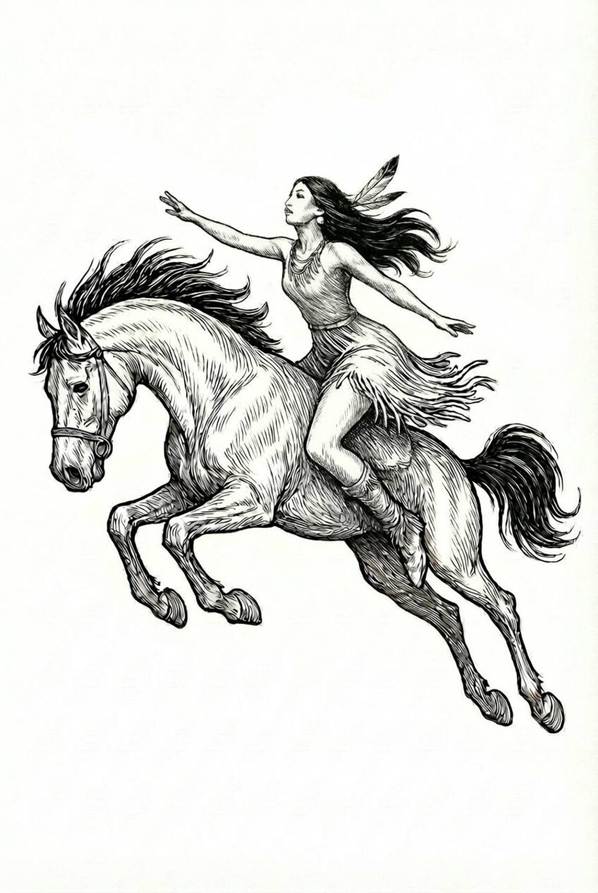
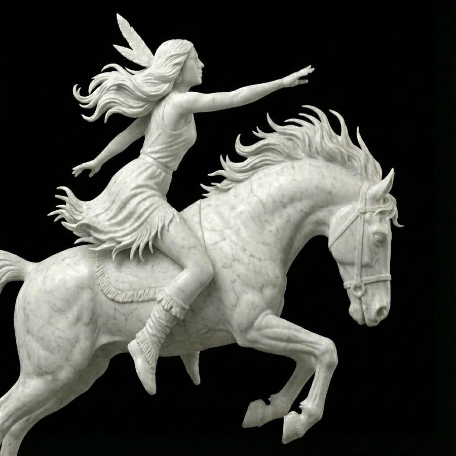
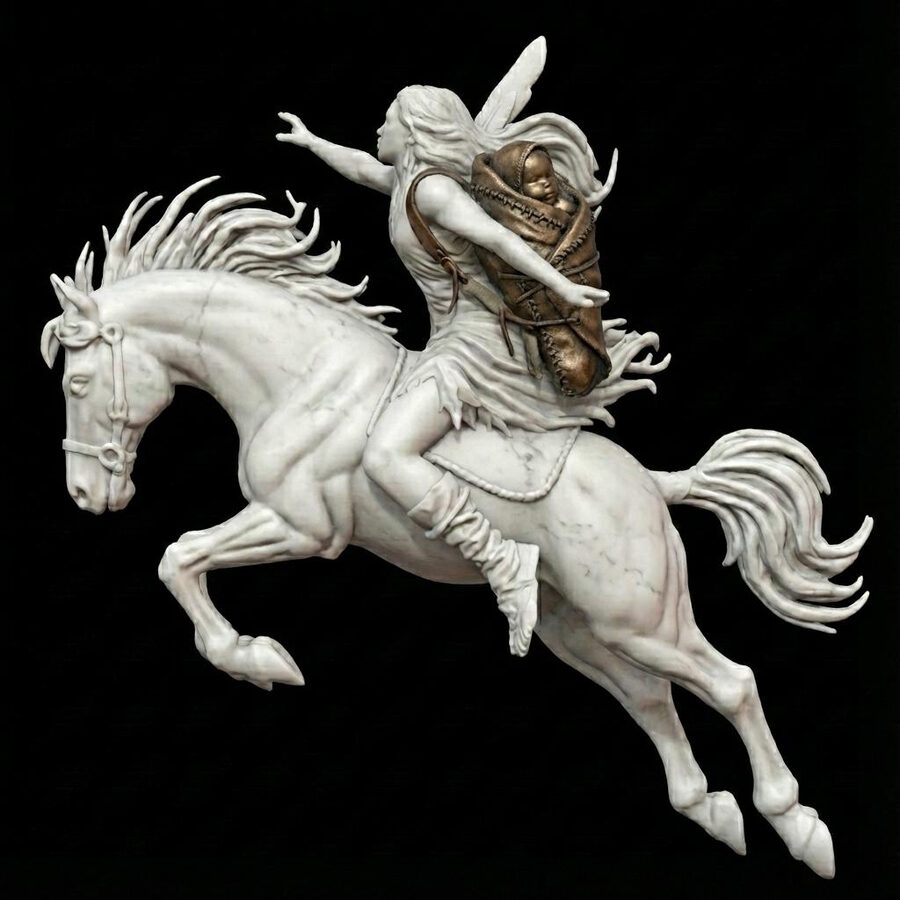
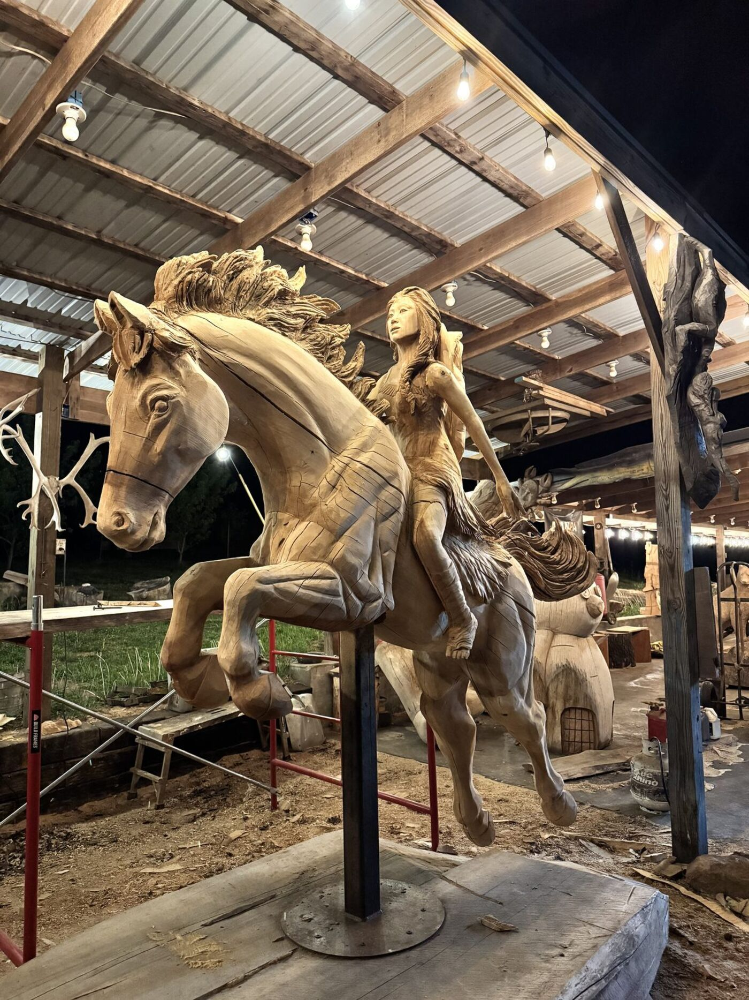
A rider on a rearing horse
A second piece, a rider in a feathered headdress on a rearing horse. Its 3D model is on Meshy.
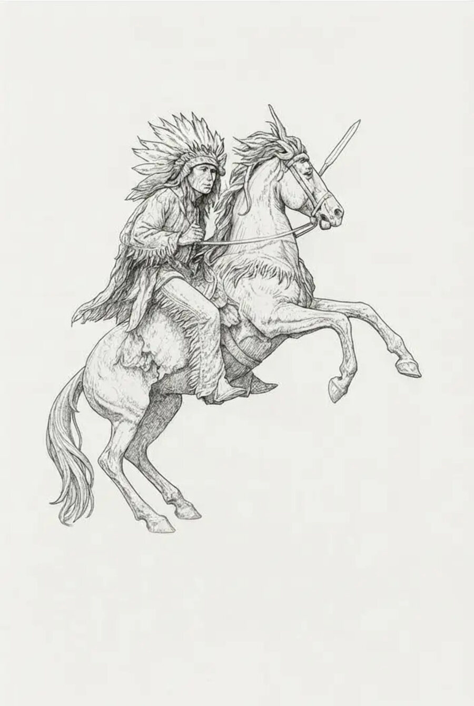
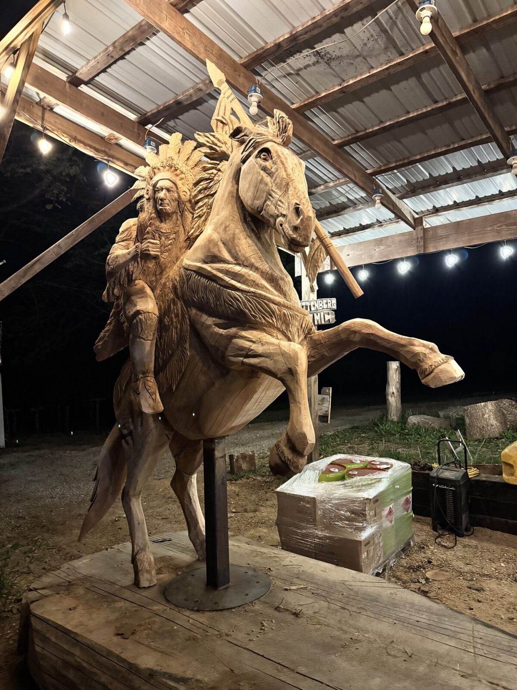
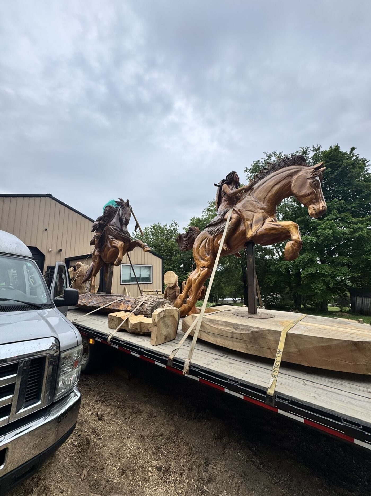
One canvas, start to finish
To show the canvas, I made an owl landing on a log: five Nano Banana 2 images, one branch and one Meshy v6 model. Every step is a node.
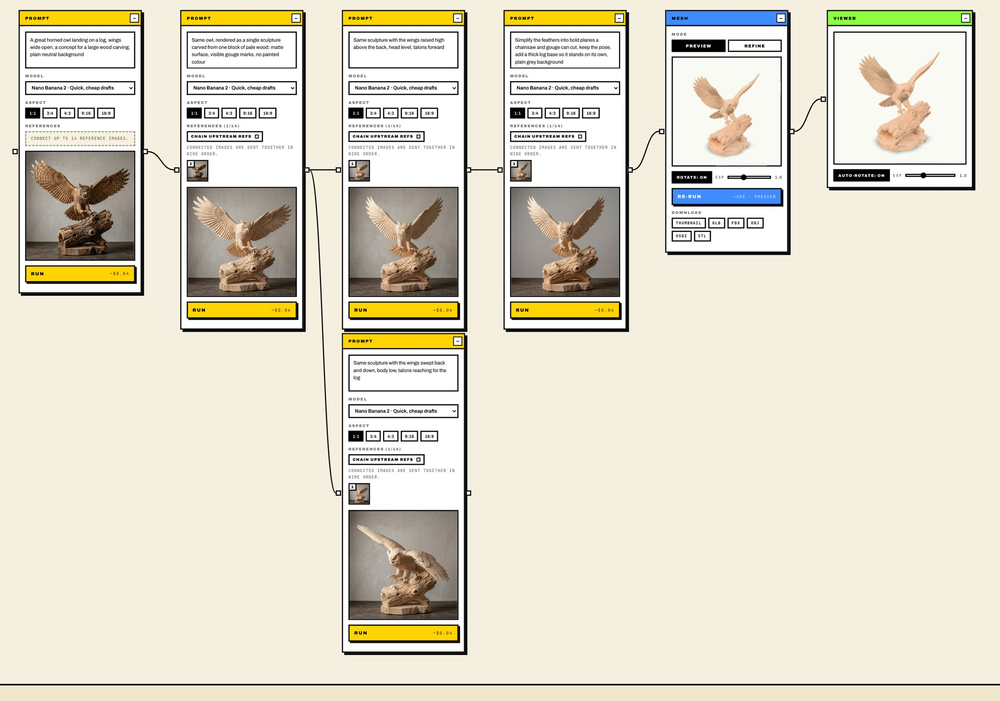
1. A first image
A text prompt and nothing else.
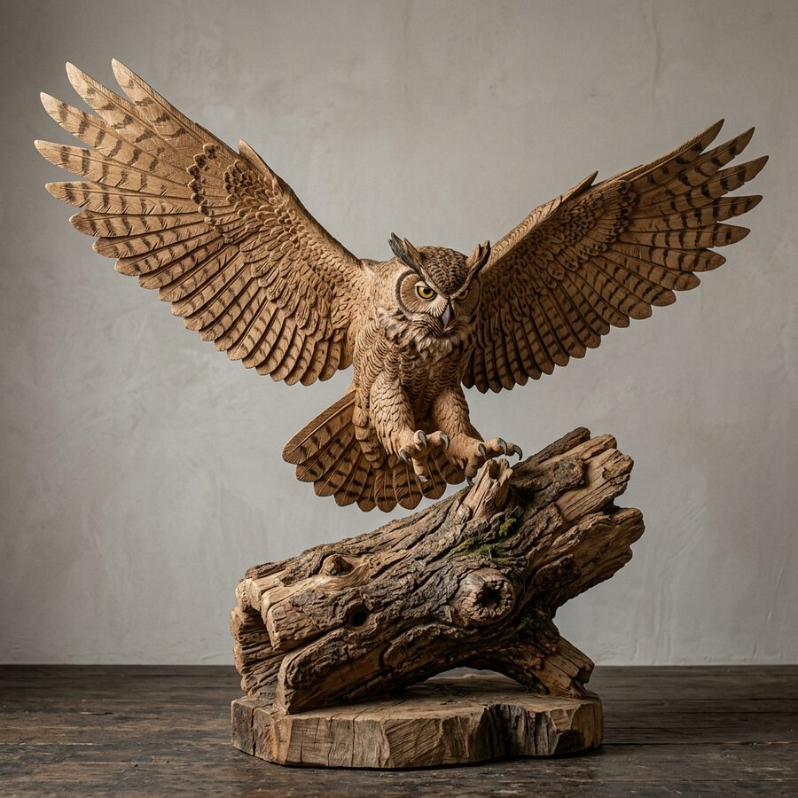
2. The same owl, as wood
An edit of the first image that turns the same owl into one block of pale, unstained wood.
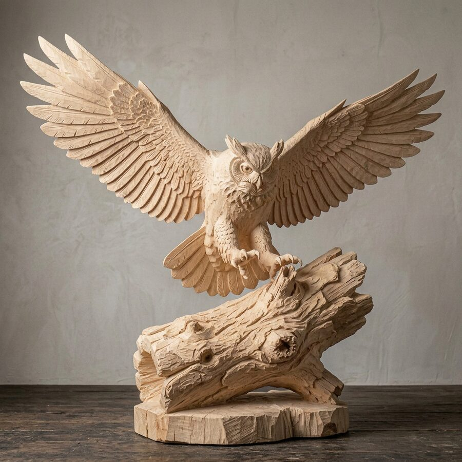
3. Two branches
Wings raised higher, or swept back and down. I kept the raised wings, and the other branch stays on the canvas in case I want it back.
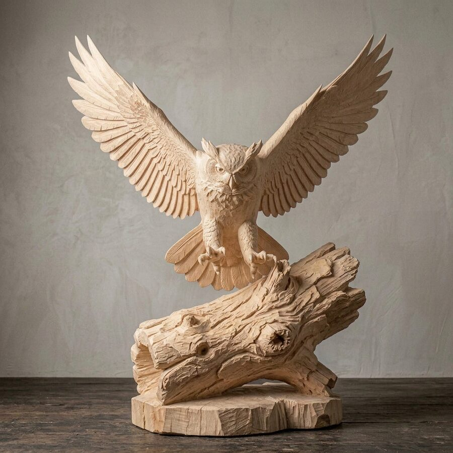
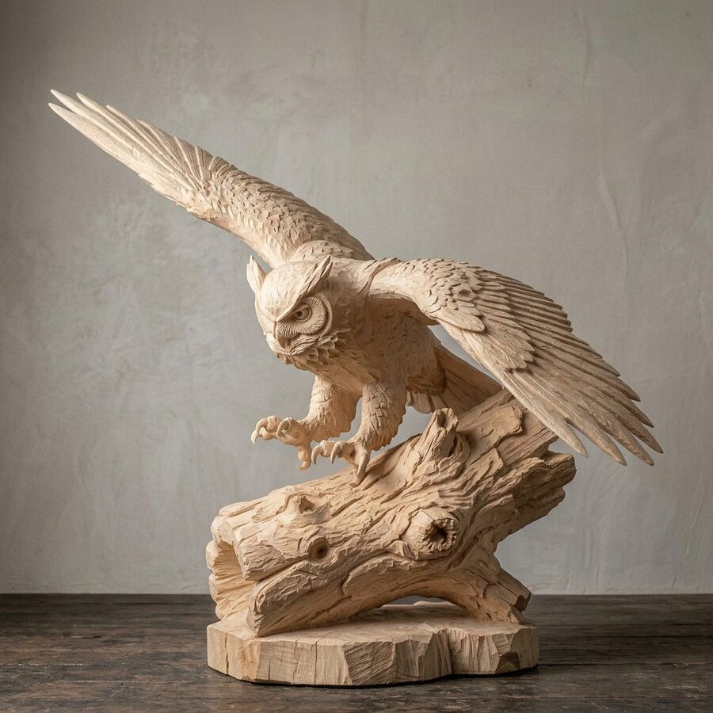
4. Simplified for carving
The feathers and face reduced to bolder planes that a carver can cut.
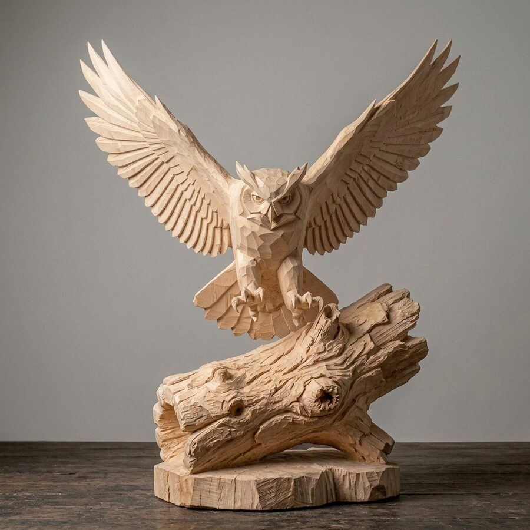
5. A 3D model
The chosen image goes into a Mesh node and comes back as a 3D model, with GLB, FBX and USDZ files to download. The Viewer node turns it so you can check every side before carving.
What’s in it
- CanvasImage, prompt, vision, video, mesh and viewer nodes. Every run is kept, any image can be a reference for the next, and every change can be undone.
- ModelsFlux Kontext Pro, Nano Banana 2 and Pro, GPT Image 2, Veo 3.1, Meshy v6 and Hunyuan 3D, all through fal.
- 3DGLB, FBX and USDZ files, a viewer, and scripts that rig, animate and pack characters for games.
- Why a canvasA chat loses which image came from which. On the canvas you branch, compare and go back. It is a node workflow in the way ComfyUI is, built to take a concept all the way to a 3D model.